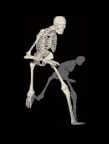

Skeletons in media are often portrayed as just that; skeletons. However, I believe all of us can agree that we have stopped to think about if this is actually possible.
Well, even though are friends may be Bad to the Bone, most of the current implementations are quite simple: Magic
No matter the setting, the reasoning, the logic, ANYTHING! You can just say magic, and its over. No argument. Just magic
And while it may work, ITS BORING! Everyone uses it, so its honestly grown quite stale. However, I have learned something that could finally provide another explination
Its perfect in everyway, perfectly explains it in any senerio, and is the best scientic answer I could find
skelepathically :)
